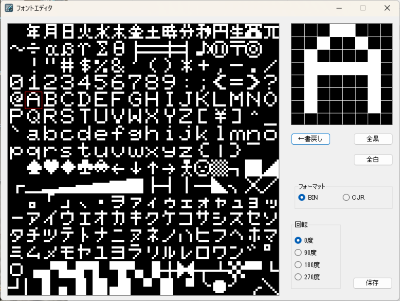

「フォントエディタ」は基本的に JR-200 用のフォントデータを編集するためのフリーソフトです。そのほかの機能としてフォントを90度、180度、270度に回転させる機能があります。
JR-200 以外の機種でも 8x8ドット、256字分のフォント、2048バイトのバイナリデータであれば扱うことができるかもしれません。
※ このプログラムは十分な検証がされていません。ユーザー環境に有害な影響を与えるようなことはしていないつもりですが、いかなる損害が生じても当方は一切補償しません。了解の上ご利用下さい。
2024.1.3 Version 0.1.1
〇バイナリ https://github.com/find-jr200/editfont/releases/download/V0.1.1/EditFont_011.zip (329KB)
・ファイル構成
editfont.exe 実行ファイル
〇ソースコードは github へ
find-jr200/editfont (github.com)
※ ダウンロードした editfont.exe を実行しようとすると「Windows によって PC が保護されました。」「実行しない」と表示されます。これは実行プログラムに署名がないせいらしいのだが、署名をつけるための諸々をする気はないので、ここは信用してもらって「詳細情報」－「実行」を選んでもらうしかありません。
それがイヤな人はソースコードをダウンロードして、ウィルスがいないことを確認して自分でビルドしてどうぞ。Visual Studio 2022 Community でビルドできます。
1. JR-200 のフォントデータ（0xD000～0xD7FF）を保存したバイナリファイルをウィンドウにドラッグ＆ドロップします。このデータは VJR-200 でフォントファイルとして使用しているものと同じです。ファイルサイズ（2048byte）をチェックしているので、正しくない場合はエラーとなり読み込めません。
2. 読み込みに成功するとフォント一覧が表示されるので、編集したい文字をダブルクリックします。編集中の文字は赤線で囲まれます。データの編集は
マウスの左ボタン 白
マウスの右ボタン 黒
です。
3. 編集画面で編集し、終了したら「←書戻し」を押します。これ忘れると変更が保存されないので注意してください。
4. すべての編集が終わったらファイルフォーマット（BIN または CJR）を選択し、回転方向を選んで「保存」を押してください。
デフォルトのフォントを回転させるだけでいい場合は、フォントファイルをドラッグ＆ドロップしたらすぐに回転方向を選んで保存するだけでオッケーです。
ゲームなどでフォントの一部のみを変更しプログラムに組み込みたい場合はバイナリで保存した後で必要な部分をバイナリエディタなどで切り出し、CJR 化→マルチ CJR 化するなどしてください。
［TOP PAGE］